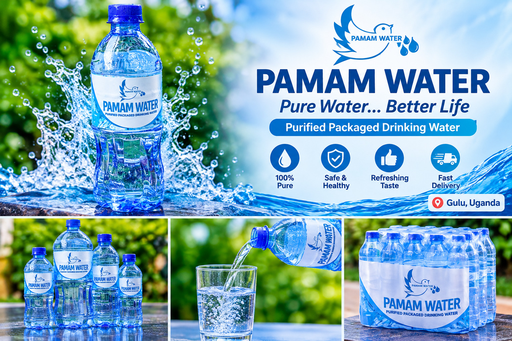

EXPLORE OUR PRODUCTS
Find Your Perfect PAMAM
Explore our water product options for different occasions and everyday needs.
WELCOME TO PAMAM DRINKING WATER
Discover PAMAM Drinking Water, bringing convenient drinking water solutions to homes, businesses and communities in Gulu, Uganda.
GET TO KNOW PAMAM
PAMAM Drinking Water is a water brand based in Gulu, Uganda. Our goal is to make drinking water convenient and accessible for everyday life. Whether at home, work, school or an event, PAMAM is here to serve your water needs.
Discover More About Us →EXPLORE OUR PRODUCTS
Explore our water product options for different occasions and everyday needs.

WHY PAMAM?
We want to make it easier for customers to find and order drinking water for their homes, businesses and special occasions.
We value our customers and their needs.
Water options for different everyday situations.
We aim to make enquiries and ordering straightforward.
OUR COMMITMENT
We recognise the importance of drinking water quality. Discover more about PAMAM's approach to water handling, packaging and customer care.
Discover Our Quality ApproachCONVENIENT SERVICE
Contact us to enquire about products, quantities and delivery arrangements in Gulu and surrounding areas.
Explore Delivery
GROW WITH PAMAM
Are you a retailer, shop owner, business or organisation interested in working with PAMAM? We welcome partnership enquiries.
Become a PartnerContact PAMAM today for product information, pricing and order enquiries.
Contact PAMAM